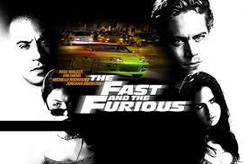
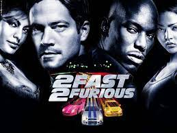
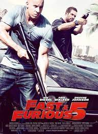
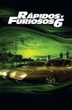

Rapidos y Furiosos, +Rapidos +Furiosos, Reto Tokio, Rapidos y Furiosos 4, Rapidos y Furiosos 5in control, Rapido y Furiosos 6, Rapidos y Furiosos 7.
En estas películas caracterizo a el personaje Brian O'Conner
Este en la primer pelicula era un policia encubierto en bandas de carreras ilgales y de unos sospechosos robos.Ya dentro de esta banda, se enamora de este nuevo mundo de las carreras
En +rapidos +furiosos el expolicía Brian O'Conner recluta a Roman Pearce, un amigo de la infancia, y juntos regresan al mundo de las carreras para transportar dinero sucio del turbio comerciante de importaciones y exportaciones Carter Verone, cuyo negocio tiene sede en Miami. Se tata de una oportunidad para trabajar con la agente encubierta Mónica Clemente y derribar el imperio de Verone.
En rapidos y furiosos 4 aun mas rapido El ex convicto Dominic Toretto se une a su viejo adversario, Brian O'Conner, que ahora trabaja para el FBI en Los Ángeles, con el fin de infiltrarse en una organización criminal que se dedica a introducir heroína en la ciudad.
En rapidos y furiosos 5 sin control los viejos amigos Dominic y Mia Toretto y Brian O'Conner se encuentran ahora en Río de Janeiro, donde pretenden dar un último golpe con el fin de obtener su libertad. Para ello reúnen a un grupo de élite de pilotos experimentados.
En rapidos y furiosos 6 desde que el robo de Dom y Brian en Río los dejó a ellos y a su equipo con mucho dinero, ellos se dispersan por todo el mundo; sin embargo, ellos tienen que vivir como fugitivos, incapaces de regresar con sus familias. Mientras tanto, el agente Hobbs ha estado persiguiendo a unos conductores mercenarios cuyo segundo al mando es alguien que Don conoce. Incapaz de detenerlo solo, Hobbs le pide ayuda a Dom y su equipo a cambio del perdón para todos.
En rapidos y furiosos 7 hace un año que Dominic y Brian fueron indultados y pudieron regresar a los Estados Unidos. Después de su llegada desean adaptarse a su nueva vida dentro de la legalidad, pero las cosas no son tan fáciles. Dom quiere acercarse a Letty y Brian se acostumbra a la vida en una urbanización con Mia y su hijo. Sin embargo, la tranquilidad no dura mucho y todo cambia cuando un asesino británico entra en sus vidas para convertirse en su mayor enemigo.